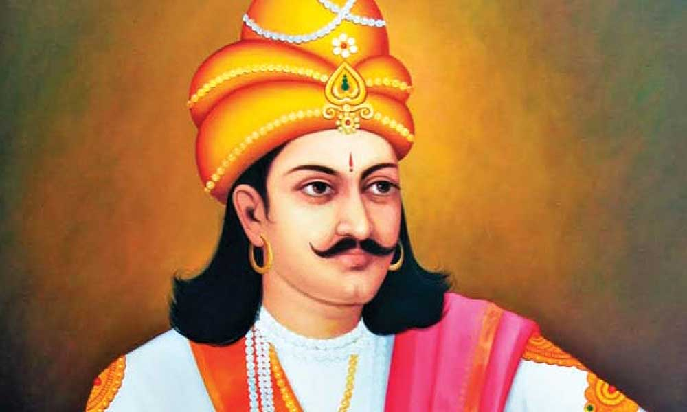
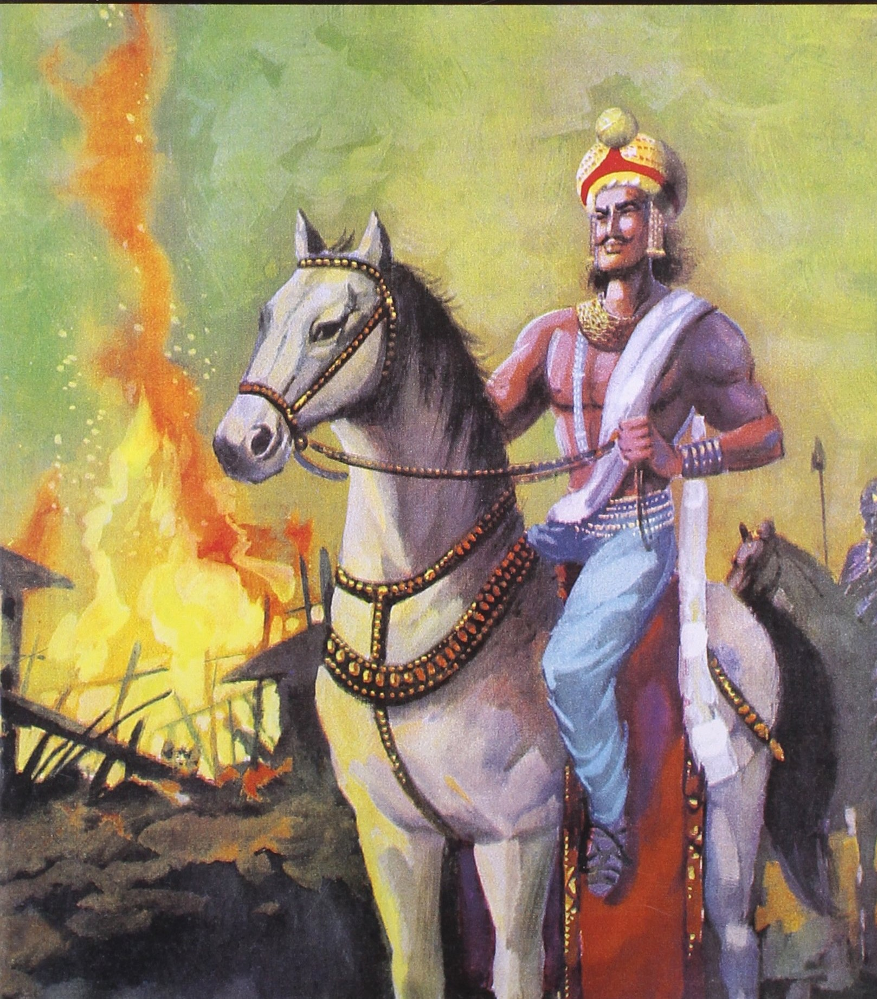
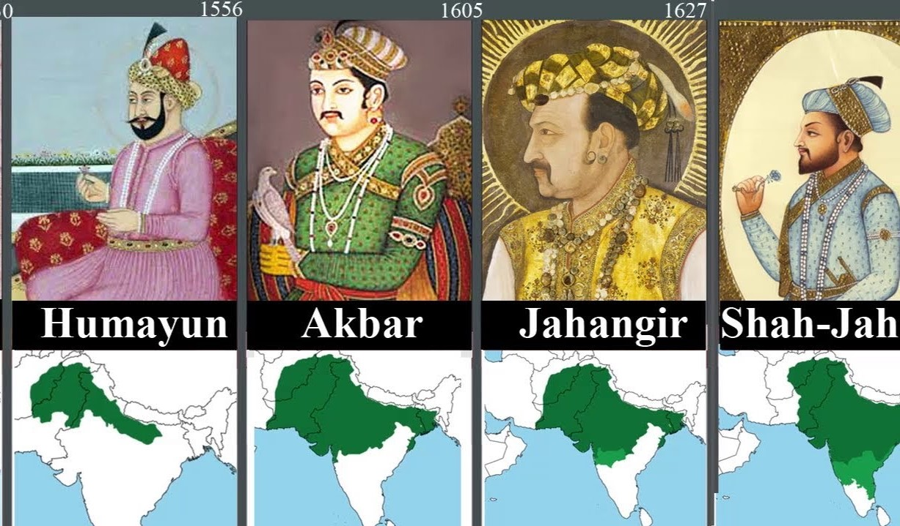
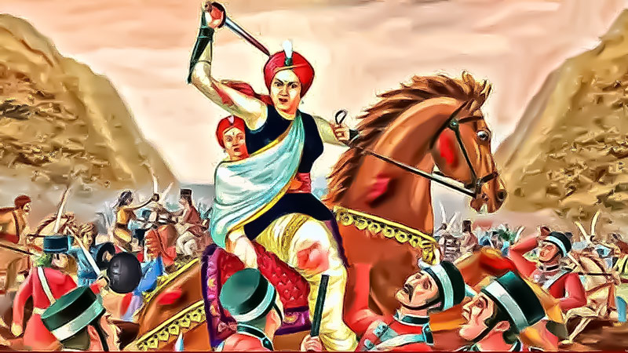
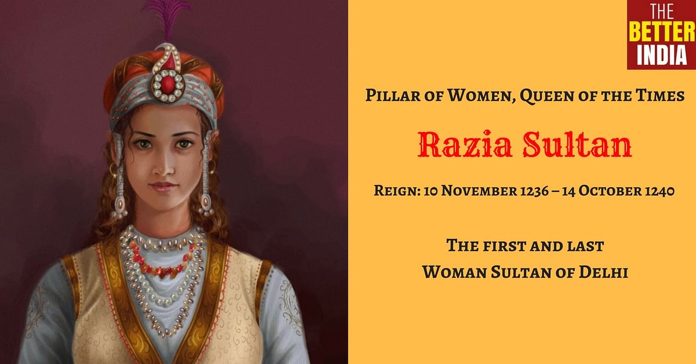
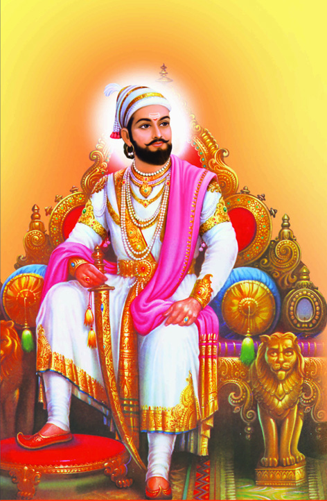
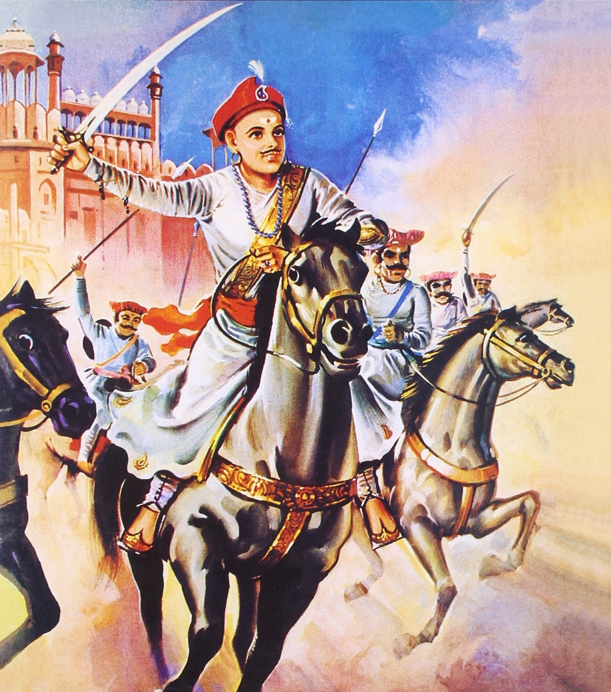

HISTORIES SAYS ALLOT :
What is the brief history of India?
The history of India starts with the existence of India itself as It located in the continent of Asia,
India covers 2,973,193 square kilometers of land and 314,070 square kilometers of water.

history means where we faced the past our country past is too deep The history of India starts with the existence of India itself as It located in the continent of Asia,
India covers 2,973,193 square kilometers of land and 314,070 square kilometers of water
The history of India starts with the existence of India itself as It located in the continent of Asia,

Gupta Maurya, 321-298 B.C.
He was the founder of the first historical Empire in India. He consolidated this huge Empire and perfected the machinery of
His Empire included Afghanistan, the Punjab, the United Provinces, Magadha (Bihar), the peninsula of Kathiawar and probably
Ashoka the Great, 273-23
He was the son of Bindusara. He conquered Kalinga in 261 B.C., his first and the last conquest. Ashoka’s work lay entirely inbr
the sphere of religion and morals. He was the first teacher of universal humanity who spiritualized the ideas of Dig-Vijay by
Ashoka was the greatest king of his dynasty, one of the greatest kings in the world history and the greatest Buddhist Emperor.
He sent monks to preach Buddhism outside India.
Kushan Dynasty Kanishka, 120-162 A.D.
He was a great Empire builder. He conquered Kashmir, Kashgar, Khotan, Yarkand and made Peshawar his capital. Like Asoka, he was a great
patron of Buddhism. But the Buddhism of his time was of the new type called Mahayana or Great Vehicle. His fame rests on his conquests
of region of Central Asia and Indianization of Khotan areas; Gandhara School of Art was patronised by him.
OUR BEHAVE ONES :-

amudra Gupta, 330-375 A.D.
He was the son and successor of Chandra Gupta I. On account of his great conquests he is known as the Indian Napoleon. He received
homage and tribute even from the Deccan rulers. Many foreign kings entered into diplomatic relations with him. He was a man of
versatile genius – a great warrior, an accomplished ruler, a musician, poet and scholar.
Chandra Gupta II (Vikramaditya- The Sun of Power), 375-413 A.D.
He succeeded his father Samudra Gupta in 375 A.D. He was a renowned warrior and an accomplished prince.
Chandra Gupta II drove away the foreigners form India. The Chinese traveler Fehien visited India in his time.
Fabien says the country was rich and the people led a highly moral and honest life.

Shivaji, 1627-1680
He was the son of Shahji Bhonsla, a Maratha chieftain in the service of the Ahmadnagar State. He was a born
leader of men, a great General, an able administrator. Shivaji created a Hindu State in defiance of the Mughal
Power, and unified the Maratha nation.
Peshwa Dynasty (1708-1818 A.D.)
Balaji Vishwanath, 1714-1720
He was the first Peshwa to become the de facto ruler. He was instrumental in the release of Sahu from the Mughal
imprisonment and securing for him the throne of Satara. Balaji restored order in the Maratha kingdom and extended
the Maratha influence. Balaji made the Maratha co-sharers of the Mughal revenue, and later the partners of the
sovereignty as well. The whole of South India practically passed under the Maratha control.